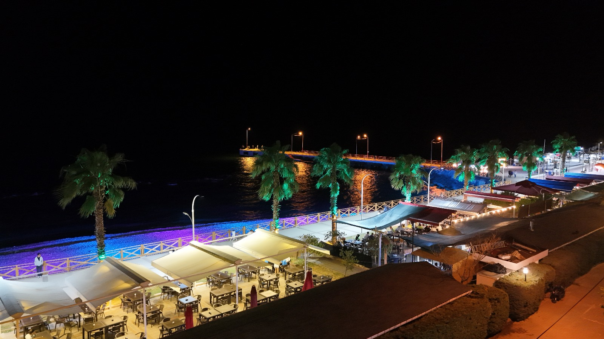
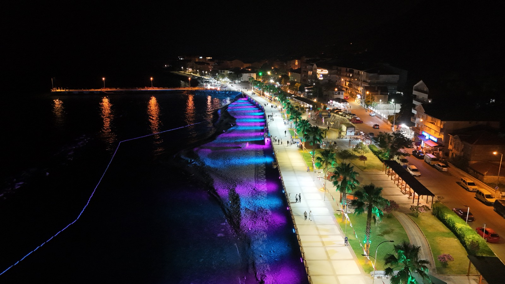
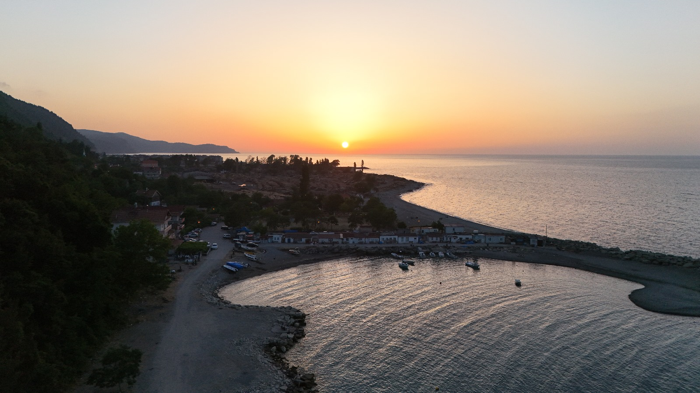
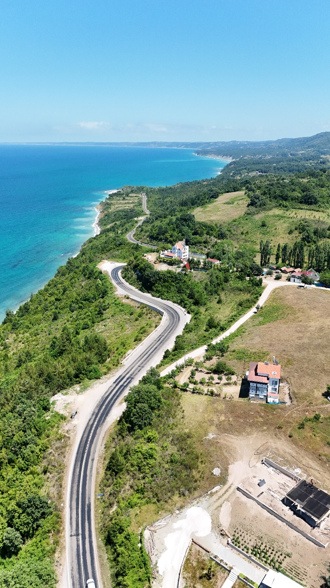
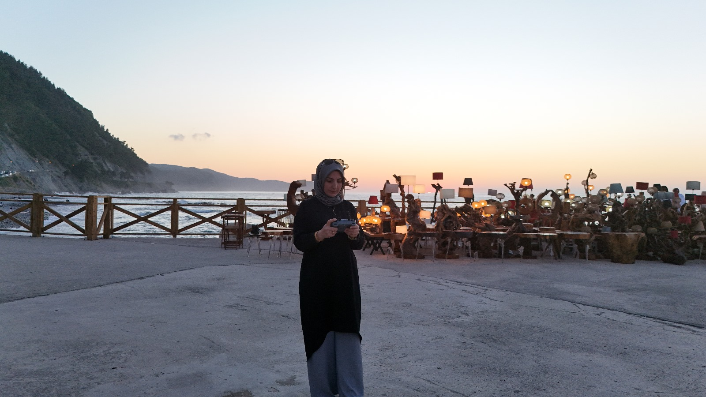
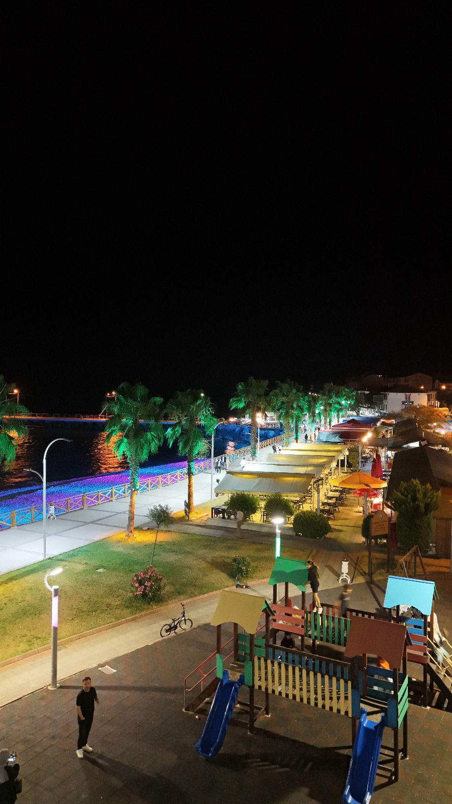
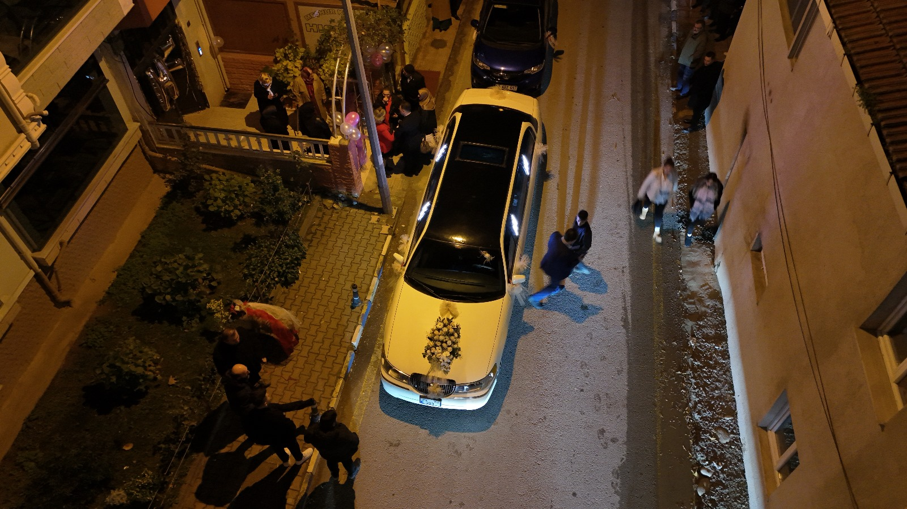

Galeri
Fotoğraflarımı aşağıda görebilirsiniz.

Ayancık sahıl gece dron görüntüsü

Ayancık sahili gece dron görüntüsü

Ayancık köyü plajı

Ayancık Yeşilyurt köyü dron görüntüsü

sahilde dronu kontrol ederken

Ayancık sahil

Ayancık sahil caddesi düğün çekimi

Ayancık fatsa tepesı